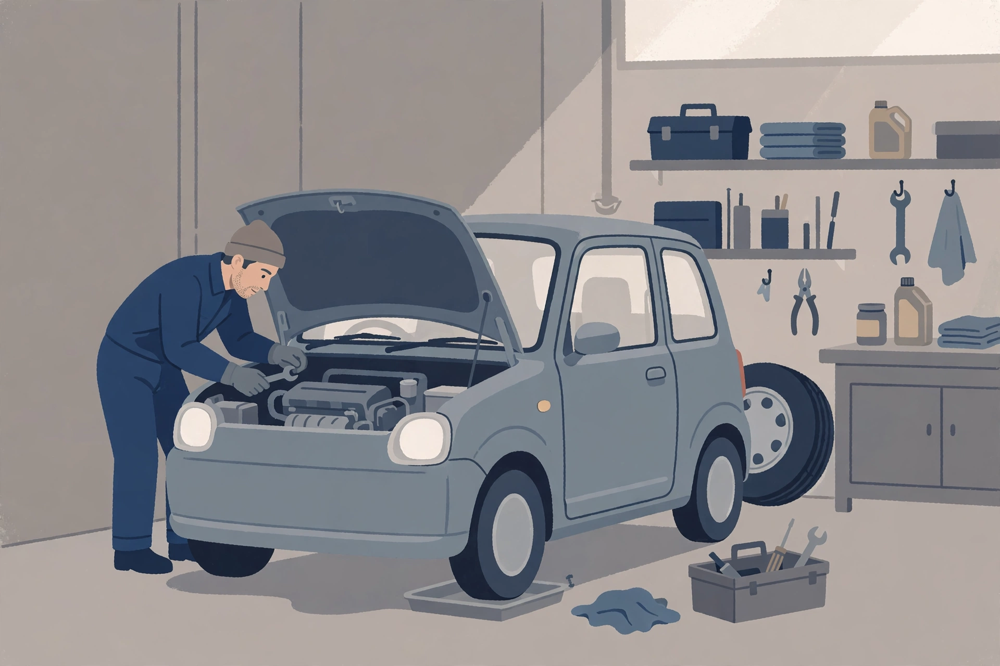

維持費を抑えやすい軽自動車ですが、2年ごとの車検（新車初回は3年目）を迎える際にはまとまった出費が発生します。「軽自動車なら車検はいくらくらいで収まるのか」「受け取った見積書が一般的な目安と比べて妥当なのか」と気になっている方も多いのではないでしょうか。
結論から整理すると、軽自動車（自家用乗用）の車検総額は依頼先や車両の状態によって変動するものの、一般的な相場感としては6万〜9万円前後が一つの目安です（二次情報ベースの目安）。このうち、法律や公的基準で定まる「法定費用」は13年未満・エコカー減税なし・指定整備工場経由（検査手数料1,800円計算）の例で27,060円となり、残りのおおよそ3.4万〜6.4万円前後が「車検基本料＋整備・部品交換費」の目安幅にあたります。
本記事では、軽自動車の車検費用の全体構造、重量税・自賠責保険料・検査手数料の基準額、13年・18年経過時の金額変化、普通車との比較、依頼先ごとの違いと見積書の見方まで丁寧に整理します。
この記事のポイント（軽自動車の車検費用の結論目安）
- 軽自動車の車検総額の目安：おおよそ 6万〜9万円（二次情報ベースの目安。業者と整備内容で変動）
- ① 法定費用（どの依頼先でも同額）：13年未満・エコカー減税なし・自賠責24か月・手数料1,800円計算の例で 27,060円（13年経過は 28,660円、18年経過は 29,260円）
- ② 車検基本料＋整備・部品交換費（目安）：総額目安から法定費用を引いた おおよそ3.4万〜6.4万円前後が目安幅（車両の消耗状態と依頼先の料金設定で変動）
- すぐ試算したい方へ：経過年数別の法定費用と総額目安を確認できる車検費用シミュレーターや、車検費用の全体像まとめもあわせてご活用ください。
軽自動車の車検費用は総額6万〜9万円が目安｜普通車との構造比較
軽自動車の車検費用も普通車と同様に、「①どの依頼先でも同額の法定費用」と「②業者と整備内容で変動する車検基本料・整備費（目安）」の2階建てで構成されます。まずは軽自動車と普通車（重量帯別）の費用構造を並べて比較してみましょう。
※エコカー減税なし・指定整備工場手数料1,800円採用値での構成イメージです。
| 車両区分・重量帯 | ① 法定費用の合計例 （13年未満・エコカー減税なし・手数料1,800円） |
車検総額の目安 （二次情報ベース） |
② 基本料＋整備費等の目安幅 （総額目安 − 法定費用） |
重量税の決まり方の特徴 |
|---|---|---|---|---|
| 軽自動車 | 27,060円 | 6万〜9万円目安 | おおよそ 3.4万〜6.4万円前後 | 車両重量にかかわらず定額（6,600円／13年未満） |
| 普通車 〜1.0t | 36,760円 | 8万〜12万円目安 | おおよそ 4.4万〜8.4万円前後 | 車両重量0.5tごとに課税（16,400円／13年未満） |
| 普通車 〜1.5t | 44,960円 | 9万〜14万円目安 | おおよそ 4.6万〜9.6万円前後 | 車両重量0.5tごとに課税（24,600円／13年未満） |
| 普通車 〜2.0t | 53,160円 | 10万〜16万円目安 | おおよそ 4.8万〜10.8万円前後 | 車両重量0.5tごとに課税（32,800円／13年未満） |
普通車と比べて軽自動車の車検総額が抑えられやすい理由は、主に2つあります。
1つ目は「自動車重量税が車両重量にかかわらず定額である点」です。普通車では車両重量が1,000kgを超えると重量税が24,600円（〜1.5t・13年未満）になりますが、軽自動車であれば背の高いスライドドア車などで車両重量が重めのモデルであっても、軽自動車規格内である限り重量税は一律6,600円（13年未満・エコカー減税なし）です。普通車（〜1.5t）と比べると、法定費用だけで18,000円以上の差が生まれます。
2つ目は「消耗部品のサイズや油脂量が比較的小さい傾向がある点」です。一般的にタイヤ径やエンジンオイルの規定量、バッテリーサイズなどがコンパクトな車種が多いため、交換が発生した際の部品代目安も普通車より抑えやすい傾向があります。ただし、ターボ搭載車やシビアコンディション（短距離走行の繰り返しや坂道走行が多い環境）で乗られている車両では、ブレーキパッドやオイル類の交換頻度が上がることもあるため、整備費は個別の車両状態によって変わります。
軽自動車の「法定費用」3項目の詳しい内訳と経過年数別の早見表
法定費用は国（または軽自動車検査協会）や自賠責保険制度へ支払う費用であり、ディーラー・車検専門店・民間整備工場・カー用品店・ガソリンスタンドなど、どの依頼先で車検を受けても同額です（検査手数料のみ工場の種別で区分差が生じる場合があります）。
1. 自動車重量税（軽自動車は定額｜13年・18年経過で増額）
軽自動車（自家用乗用・2年分）の自動車重量税は、エコカー減税の適用がない場合、初度検査年月からの経過年数に応じて以下の3段階に定まっています。
- 13年未満：6,600円
- 13年経過（13年以上18年未満）：8,200円
- 18年経過（18年以上）：8,800円
なお、燃費基準等を満たすエコカー減税対象車の場合は、上記の基準額から減税または免税になる場合があります。対象かどうかは車検証（軽自動車の場合は「初度検査年月」や型式等）をもとに、軽自動車検査協会や国土交通省の案内ページ、依頼先の見積もりで確認できます。
2. 自賠責保険料（軽自動車区分）
継続検査時に加入する自賠責保険料（24か月）は、2026年11月1日始期の料率改定で軽自動車18,660円・普通自動車18,560円となり、軽自動車の方が100円高くなっています。
- 24か月契約：18,660円（通常の継続検査で一般的）
- 25か月契約：19,170円（車検切れからの再取得時や満了日の都合で余裕を持たせる場合など）
3. 検査手数料（印紙・証紙代：1,800円前後、工場の種別で変わる）
軽自動車の継続検査は、普通車を管轄する運輸支局ではなく軽自動車検査協会の管轄となります。検査手数料は1,800円前後（工場の種別で変わる）が目安で、自社に検査ラインを持つ指定整備工場経由では1,800円前後、検査協会へ車両を持ち込む認証工場やユーザー車検では2,200円前後になる場合があります。
【経過年数別】軽自動車の法定費用合計早見表
上記3項目（重量税＋自賠責24か月18,660円＋検査手数料1,800円採用値、エコカー減税なし）を合算した経過年数別の法定費用一覧は以下のとおりです。
| 初度検査からの経過年数 | 自動車重量税 （2年分） |
自賠責保険料 （24か月） |
検査手数料 （指定工場採用例） |
軽自動車の法定費用合計例 | 13年未満との差額 |
|---|---|---|---|---|---|
| 13年未満 | 6,600円 | 18,660円 | 1,800円 | 27,060円 | 基準 |
| 13年経過 | 8,200円 | 18,660円 | 1,800円 | 28,660円 | ＋1,600円 |
| 18年経過 | 8,800円 | 18,660円 | 1,800円 | 29,260円 | ＋2,200円 |
普通車（たとえば〜1.5tでは13年未満24,600円→13年経過34,200円→18年経過37,800円）と比べると、軽自動車は18年経過しても重量税の増額幅が＋2,200円に留まります。そのため、長く乗り続ける場合でも法定費用の負担増が比較的緩やかである点が軽自動車の特徴といえます。ただし、年数が経過した車両ではゴムブーツ類や油脂類、冷却水、ブレーキ周りなどの経年劣化部品の交換が必要になりやすいため、整備費側の見積もり確認が重要になります。
軽自動車の車検総額に差が出る理由｜基本料と整備内容の見方
軽自動車の法定費用が2.6万〜2.8万円前後でほぼ固定されているにもかかわらず、実際の見積総額が6万円台になるケースもあれば9万円以上になるケースもあるのは、「車検基本料（点検・検査代行料）」と「整備・部品交換費」に幅があるためです。
依頼先種別による特徴と向き・不向き
特定のチェーンや店舗が一律に優れているわけではなく、依頼先の「種別」ごとにサービス範囲と料金設定の考え方が異なります。
| 依頼先の種別 | 軽自動車車検における一般的な特徴（目安） | 向いているケース |
|---|---|---|
| ディーラー | メーカー純正部品と専用診断機を用いた点検・予防整備が手厚い。先進安全装備の点検や保証継承も相談しやすい反面、総額目安は高めになりやすい | 新車から初回・2回目の車検、メーカー保証の継承を重視したい場合 |
| 車検専門店 | 軽自動車の入庫実績が豊富な店舗が多く、立会い説明で交換部品を選びながら進めやすい。基本料を抑えた料金設定が見られる | 費用内訳を納得しながら決めたい場合、短時間で終えたい場合 |
| 民間整備工場 （指定・認証） |
車両の年式や走行距離に応じ、社外優良部品やリビルト品を使った修理・整備を柔軟に相談しやすい | 長く乗っている軽自動車や、日頃の点検もまとめて相談したい場合 |
| カー用品店・ ガソリンスタンド |
タイヤ・バッテリー・オイルなどの消耗品を店舗ラインナップから選びやすく、日常利用の延長で見積もりを頼みやすい | 近隣店舗で気軽に事前見積もりを取りたい場合 |
| ユーザー車検 | 本人が軽自動車検査協会へ持ち込む方式（予約制）。業者への基本料はかからないが、保安基準適合の整備が前提で手間と自己責任を伴う | 整備知識と平日の時間があり、点検整備と検査手続きを自力で行える場合 |
軽自動車は日常の買い物や通勤など短距離の街乗り（ストップ＆ゴーが多い環境）に使われる比率が高く、走行距離が少なくてもエンジンオイルの汚れやバッテリーの劣化、ブレーキパッドの摩耗が進んでいることがあります。見積もり金額の大小だけでなく、「どの部品をなぜ交換するのか」という整備内容の説明が丁寧かどうかを見比べることが大切です。
- 関連解説：依頼先5種別の違いと比較ポイント ／ ユーザー車検の手順と注意点
軽自動車の車検証チェックポイントと見積もり時の確認事項
事前見積もりを依頼する前や、受け取った見積書を照合する際には、手元の車検証（自動車検査証）と見積明細の以下のポイントを確認しておきましょう。
1. 車検証で確認しておく項目
- 用途（乗用か貨物か）：本記事の基準額は「自家用乗用（5ナンバーの軽乗用車）」を対象としています。軽商用バン・軽トラックなどの「貨物（4ナンバー）」は初回からの有効期間や重量税・自賠責保険料の区分が乗用とは異なる場合があるため、用途欄を必ず確認してください（貨物区分の具体額は依頼先または軽自動車検査協会の案内でご確認ください）。
- 初度検査年月：普通車の車検証にある「初度登録年月」にあたる項目が、軽自動車では「初度検査年月」と表記されています。ここから13年経過・18年経過の該当有無を確認します。
- 有効期間の満了する日：軽自動車（自家用乗用）も普通車と同じく初回3年・以降2年が有効期間で、満了日の2か月前から次回満了日を短縮せずに継続検査を受けられます。
2. 見積書を受け取ったときの4つの照合ポイント
- 法定費用の欄が基準額と合っているか：重量税（エコカー減税の有無・経過年数）、自賠責保険料（24か月18,660円か25か月19,170円か）、検査手数料（1,850〜2,600円）を確認します。
- 「保安基準適合に必須の整備」と「推奨・予防整備」が分かれているか：今回交換しないと車検に通らない箇所と、次回までの安心のための提案箇所を整備士に確認し、予算や走行予定に合わせて整理します。
- 軽自動車規格の消耗品グレードを選べるか：タイヤやバッテリー、エンジンオイルなどはグレードによって価格差があるため、乗り方に合った製品を選べるか相談します。
- 代車費用・引取納車費用・付帯メニューの有無：不要なオプションが含まれていないか、また法定費用を含めて希望の決済方法（現金・カード等）が使えるかを事前に確認しておきます。
軽自動車の見積もり見直し・予約時期・追加整備の関連ガイド
軽自動車の基本料や予防整備を安全性を保って見直す実践手順は「軽自動車の車検を安くする考え方」、複数社の見積書を横並びで照合する方法は「車検見積もり書の見方と比較手順」で整理しています。混雑期を避けた予約スケジュールは「車検の予約はいつから取るべきか」もご覧ください。
軽自動車の車検費用に関するよくある質問（FAQ）
Q1. 背の高いスライドドア付きの軽自動車でも重量税は同じですか？
A. はい、自家用の軽乗用車であれば、車両重量が軽いアルトやミラのようなタイプでも、車両重量が1,000kg近いスーパーハイトワゴンタイプでも、エコカー減税の適用がない場合の自動車重量税は定額（13年未満で6,600円）です。ただし、車体が重いモデルではタイヤやブレーキ部品への負荷が大きくなりやすく、整備・部品交換費の目安に差が出る場合があります。
Q2. 軽自動車の法定費用はディーラーと車検専門店で変わりますか？
A. 自動車重量税と自賠責保険料はどの依頼先でも同額です。検査手数料（印紙代）のみ、申請方法によって異なります（2026年4月改定：OSS申請1,850円・窓口申請2,100円・持込検査2,500〜2,600円）が、見積総額の差は主に「車検基本料」と「推奨整備・部品交換の範囲」の違いによって生じます。
Q3. 新車から初めての車検（3年目）でも費用目安は同じですか？
A. 法定費用の仕組み（2年分の重量税＋24か月自賠責＋検査手数料）自体は2回目以降と同じですが、エコカー減税の対象車であれば重量税が減免される場合があります。また初回車検時は部品の摩耗が比較的少ないケースが多い一方、メーカー保証の継承点検を受けるかどうかなど依頼先の選び方で総額目安が変わります。
Q4. 軽自動車の車検が切れてしまった場合はどうなりますか？
A. 車検が切れた車両は道路運送車両法により公道を走行できません。そのまま運転して検査場や工場へ向かうことはできないため、市区町村での臨時運行許可（仮ナンバー）の手続きを行うか、事業者に積載車での引き取りを依頼する必要があります。また、自賠責保険も切れている場合は25か月契約（軽自動車19,170円）が必要になるケースが一般的です。
Q5. ターボ搭載の軽自動車や短距離走行が多い軽自動車では、車検時の整備で何に注意すべきですか？
A. 法定費用自体はターボの有無や走行環境にかかわらず同じですが、ターボ車や短い距離の加減速を繰り返す使用環境（シビアコンディション）では、エンジンオイルやブレーキパッド・バッテリーなどの消耗ペースが早まりやすい傾向があります。事前見積もりで消耗品の残量を確認し、必須交換か予防交換かを整理しましょう（詳細は軽自動車の車検を安くする考え方を参照）。
まとめ｜法定費用27,060円〜を基準に見積もり内訳を比較しよう
軽自動車の車検費用は総額6万〜9万円前後が一般的な目安であり、そのうち「法定費用」は13年未満・エコカー減税なし・手数料1,800円計算の例で27,060円（13年経過28,660円、18年経過29,260円）と定まっています。まずはこの法定費用を基準線として押さえ、残りの「車検基本料＋整備・部品交換費」の内訳を複数の依頼先で見比べてみてください。
条件別の試算や関連する制度については、以下のページもあわせてご活用いただけます。
- 全体像と試算ツールを使う：車検費用の全体像まとめ ／ 車検費用シミュレーター
- 法定費用と経年重課を詳しく知る：法定費用の内訳詳細 ／ 13年・18年経過で重量税が上がる仕組み
- 依頼先と費用の抑え方を比較する：依頼先5種別の違い ／ 車検費用を抑えるポイント ／ ユーザー車検の手順と注意点
- 車種比較・時期の確認をする：車種別の車検費用 ／ 車検の時期・有効期間・満了日の確認方法
関連ガイド・試算ツールをカードから選ぶ
更新日・数値の確認方法について
- 最終更新日：2026年11月16日
- 執筆・編集：車検費用ナビ編集部
- 金額目安の算出・確認方針：本記事の法定費用は自家用軽乗用車の継続検査（2年分）・エコカー減税適用なしを前提とした基準データに基づいています。車検総額の相場感（軽自動車6万〜9万円目安等）は二次情報ベースの一般的な目安レンジであり、実際の費用は依頼先の料金設定、車両の整備・部品交換内容、エコカー減税の有無、用途区分（乗用・貨物）等によって変動します。受検前には必ず車検証および各事業者の個別見積書をご確認ください。
関連ポリシー：数値目安の算出基準・出典確認フロー ／ 広告掲載ポリシー（#PR表記方針） ／ 運営者情報
出典・参考情報
本ページの数値・制度情報は、以下の公的機関・公式情報に基づいて確認しています。
- 軽自動車検査協会／国土交通省「軽自動車の自動車重量税額・次回重量税額照会サービス」
- 損害保険料率算出機構「自賠責保険基準料率表」
- 軽自動車検査協会「継続検査の手数料一覧」／自動車技術総合機構「自動車の登録・検査の法定手数料」
※上記出典は2026年11月16日に確認しました。